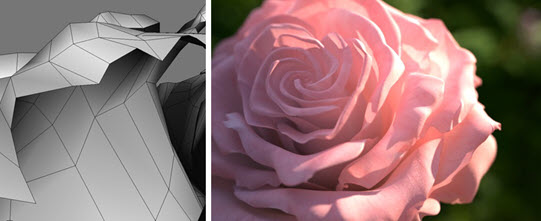

对一朵玫瑰花进行着色
本教程探讨如何使用 standard_surface 着色器着色出外观逼真的玫瑰花材质。我们将讨论构成玫瑰花着色器的一些细微（但却重要）的着色属性，包括半透明度和次表面散射，以及渲染单面几何体时要记住的一些建模注意事项。
着色
玫瑰花的 standard_surface 着色器连接了 base_rolor、镜面反射*和 *SSS 贴图。另外，次表面颜色属性还连接了一个稍加修改的相同颜色贴图。通过启用“薄壁”(Thin Walled)可获得背面照明效果。
下面的 GIF 动画显示了漫反射 (base_color)、镜面反射（具有高 *specular_roughness）和*次表面 (SSS) 散射对玫瑰花外观的作用。场景使用指向摄影机的带方向性的灯光（营造出半透明的背面照明效果）和 skydome_light（其“颜色”(Color)属性连接了天空 HDR 贴图）进行照明。
半透明度
将 SSS 和 thin_walled 结合使用可重现从背后照亮半透明对象的效果（请记住，此效果更适于单面对象）。下面的图像显示了增加花瓣厚度时花瓣渲染效果有何不同。花瓣后面放置了一个苍蝇模型，平行光照向摄影机，以获得最佳效果。
通常建议只对纤薄对象（单面几何体）使用 thin_walled，因为具有厚度的对象可能无法正确渲染。但是，在本例中，即使有厚度也没问题（要确保漫反射光线深度级别大于 1）。
| 网格宽度比例：1 个单位 | 网格宽度比例：10 个单位 |
照明
天穹灯光的“颜色”(Color)属性连接了一个 HDRI。本示例中使用的 HDRI 下载自 www.hdrlabs.com。另外，使用了一个平行光向场景中添加更多太阳光。
场景使用一个带方向性的灯光和一个连接了 HDR 贴图的天空着色器进行照明
阴影终结
使用方向性很强的灯光从背后照亮场景在阴影终结处产生了一些瑕疵。当前由 shadow_terminator_fix 实现的算法对球体这样的凸面曲面效果不错，但是不能修复凹面区域中的自身阴影。有很多方法可以解决此问题。
阴影角度
增大灯光半径（在本例中是增大“角度”(Angle)，因为我们使用了带方向性的灯光来表示太阳）可以帮助减弱阴影终结效果（通过柔化阴影）。但是，即使将“角度”(Angle)增大到很高，阴影终结效果仍然比较明显。
| 阴影角度：0 | 阴影角度：4 |
细分迭代
另一个解决办法是增加花瓣几何体的 subdivision_iterations 数量。通过这种方法可使瑕疵变得更小。
 |
|
| 未使用细分 | 细分迭代：2 |
挤压厚度
一种更好的、物理上更准确的方法是通过挤压花瓣来为几何体增加少量厚度。左图中的花瓣只是单面的。渲染时，花瓣看起来非常薄（在花瓣的背向散射区域周围更明显）。右图显示了花瓣具有挤压深度时的渲染结果。现在，花瓣在渲染时看起来有一定的厚度。

单面（网格没有厚度）。
网格具有挤压厚度
渲染
间接漫反射光线深度
增大 diffuse_ray_depth 值会将更多的反弹光添加到场景中。将光线深度增大到 3 后，玫瑰显得明亮得多。增大 diffuse_ray_depth 值时要小心谨慎，因为 SSS 对此值很敏感。当您有许多重叠或闭合的曲面（如玫瑰花）时，如果将 diffuse_ray_depth 反弹数增大到 2 或更多，效果会很明显。
降低次表面散射的值将有助于抵消这种增加的亮度。
| 漫反射光线深度：1 | 漫反射光线深度：3 |
有关如何对玫瑰进行着色的教程到此结束。本文介绍的方法同样适用于其他半透明材质，例如皮肤、纸张和蜡。